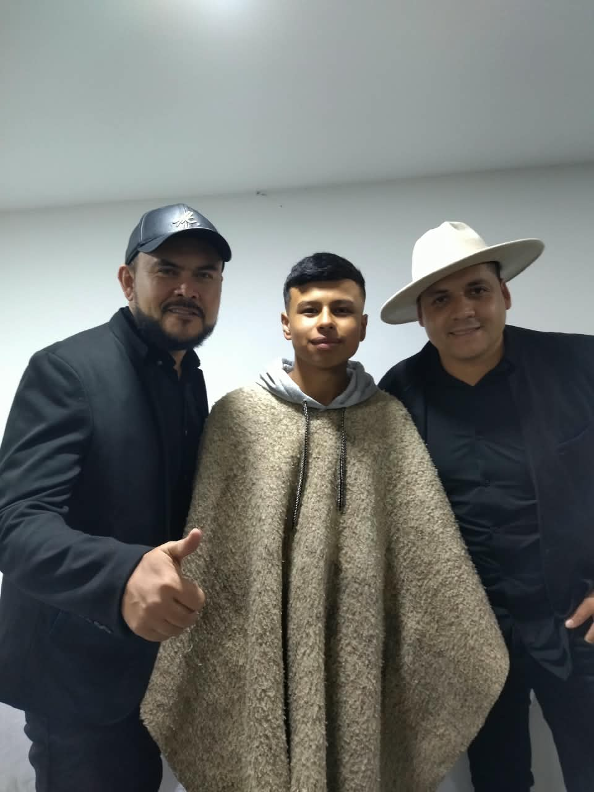
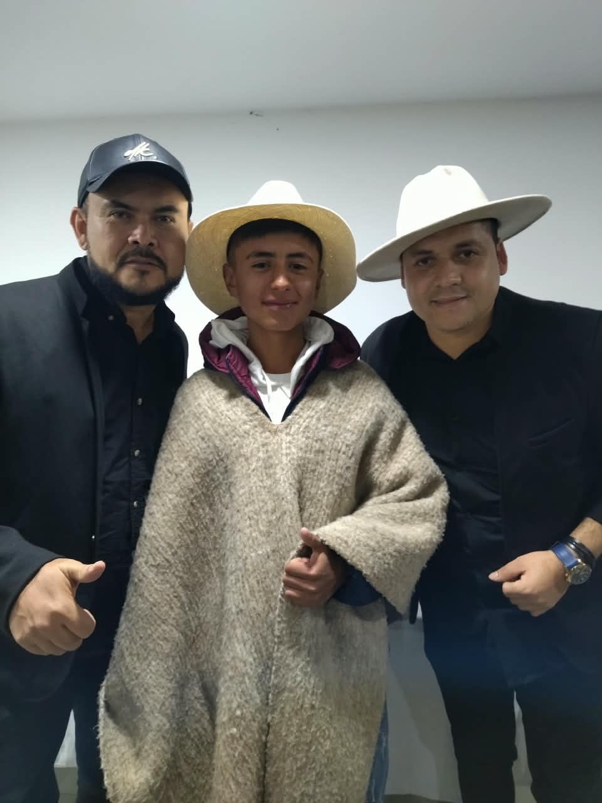

¿Por Que Elegi Este Tema?
Bueno elegi este tema por que siempre me ha gustado este genero y desde pequeño junto a mis primos decidimos meternos en este mundo de la musica carranguera y empezamos a estudiar en la escuela de cuerdas de Aquitania creando nuestra agrupacion llamada arte carranguero
Arte Carranguero es un grupo musical ,nacido en Aquitania , este grupo nace en la escuela de cuerdas de Aquitania ,en esta escuela aprendimos lo esencial para formar un grupo carranguero y gracias a nuestro profesor Jesus Andres lo logramos el nos enseño todo para aprender a tocar en conjunto ,participamos en varios concursos representando al bello municipio de Aquitania,aunque hoy en dia nos hemos distanciado por cosas de la vida ,la pasion por este genero y por hacer musica jamas terminara, en su momento grabamos una cancion que esta en redes sociales llamada la Red Social.


